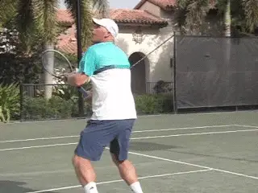
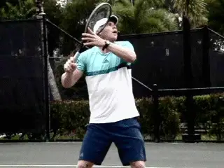
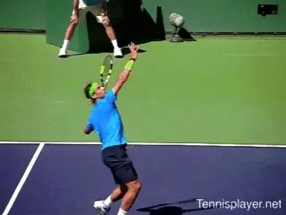
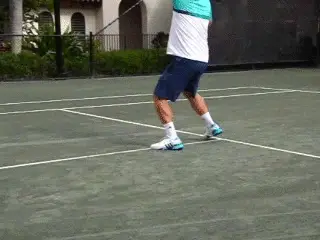
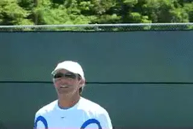
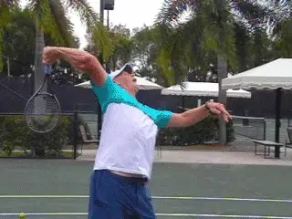
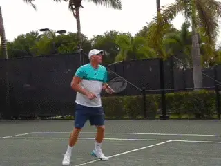

Previous: The Overhead | 🏠 Classic Lessons Home | Next: The Perfect Ball Toss
The Overhead: Mentality and Physicality
Comprehensive unified tennis knowledge base — Fundamentals, Stroke Analysis, Reference Library, and more
The Overhead: Mentality and Physicality
Kyle LaCroix
The overhead. No shot in tennis produces such a variety of shot outcomes and emotional reactions.
The overhead is the way to show your opponent you mean business - or that your confidence is fragile. Some players love the opportunity to make a statement by putting away a smash. Others freeze with the thought, "Oh no, not an overhead."
I believe that teaching the overhead has never been more important. As players get faster and stronger and counter punching and defensive play becomes routine, the overhead is critical. Yet the mentality of so many players at the club level is that "modern" groundstrokes are the only thing that matters.

Developing a deadly overhead is more important than ever—at all levels.
The antidote to baseline play is attack, and the overhead is an acid test for an attacking player. I believe in integrating serve and volley at all levels. (Click Here for the summary article Kyle's series.) A great overhead is integral in mastering this attacking game.
But attack can be blunted by the lob if players cannot take the opportunity to finish. A great overhead sends the highly discouraging message to your opponent that he can't win points by hitting the ball up in the air.

When the ball goes up, believe the point is over.
Want It
The overhead must be hit with absolute conviction. It should be the shot that you want to hit, that you are hoping to hit, that you are eager to hit. When the ball goes up, you need to believe that the point is over.
Doubt about your overhead will lead to choking at critical times. Technique is important, but belief is the prerequisite. Conviction can, in fact, often overcome technical imperfection.
When you get an overhead, think that it is a sign that your opponent has little or no option other than the lob. Because it is that sign.
Like all other shots and components of this game, the overhead takes purposeful practice and plenty of repetition. So how much have you actually practiced it yourself?
Do you go out once a week (or more) and hit 50 overheads from all positions on the court? Few players do and it shows when they miss a sitting overhead in a league doubles match with their partner and opponents watching and taking note.

The pro overhead: relaxed and explosive.
Practice and repetition lead to confidence, and confidence leads to calmness, relaxation, and explosiveness. The overheads in the Tennisplayer Stroke Archive capture these exact feelings of conviction and relaxation.
Between the Archive and the articles already published by Scott Murphy (Click Here), Kerry Mitchell (Click Here), and Jeremiah Walsh (Click Here) Tennisplayer offers the most thorough understanding of the overhead available anywhere in the world.
The main purpose of this article, from someone who is an attacking player, is to add emphasis about the mind set. But as a teacher, I also want to add my personal take on a few critical components.
Positioning
Footwork on the overhead is often ignored by lower level players. They are usually anxious to hit the ball as hard as possible without recognizing that the prerequisite is good positioning.

Do you necessarily need an explosive scissor kick overhead to hit the right shot?
Watching great players, you'll see an immediate reaction to the ball and the start of a unitary turn with the body and feet, followed by shuffle or cross-over steps. Most lower level players have an insufficient body turn and can only backpedal with the torso facing the net.
As good players move into position the non-dominant arm goes up. The length of time that the opposite arm stays engaged depends on the height of the ball and the amount of time you have to hit.
Fellow Tennisplayer.net writer Scott Murphy has a great positioning drill to work on using the opposite arm. He has players learn to catch the ball with the opposite hand. This forces players to find the right positioning to the ball, and I use this ball catch progression with all my students.
We also know from the great article by Jeremiah Walsh (Click Here) that you want to hit the overhead in front of your head not over your head--despite the shot's name.
Jeremiah also makes a really important point that for most club players a defensive overhead is a necessity. For many players a high ball that gets past them usually ends with the loss of a point.

Catching the ball with the opposite arm is a great drill to learn positioning.
To deal with these balls, you must be comfortable going up in the air and off the back foot. But that doesn't mean hitting an explosive 100mph scissor kick winner if you don't have the athleticism or the confidence.
So you need to recognize that your overhead needs to have both offensive and defensive aspects, relative to your ability. This doesn't undermine my point about total belief by the way.
In fact the opposite. Understanding the distinction should give you more confidence because you have a clear plan of how to deal with all situations.
The Swing
Is the overhead swing exactly like the serve swing? That depends. Unlike the serve, where you place the ball with your toss, the overhead is a shot that you hit off an oncoming, falling ball hit by your opponent. The spin, speed, height, and angle of the incoming ball are out of your control.
Some coaches want their players to reach full racquet drop on their overheads much like the serve. Others say that a full racquet drop may be unnecessary--or too much to achieve--given to the variables in the oncoming ball.

The full racquet drop isn't necessary on many or even all overheads.
Shots that are lower and dropping faster may rush you so your racquet drop can't reach its ideal and deepest point. As someone who often hits difficult overheads for winners, I can attest that a shortened drop can be very effective.
The real key is to focus on positioning, clean contact in front of you, and your aggressive mentality.
To Bounce or Not to Bounce
One of the greatest advantages of the overhead is that taking it in the air takes time away from your opponent.
But when a ball is hit exceptionally high, usually hit by a scrambling opponent who rockets a ball high in the air, the timing is notoriously difficult and even world class professionals can struggle.
Also in heavy wind the flight can be very tough to predict. You can let both these types of balls bounce, but get into position behind the bounce so that you can step into it and hit it with authority off the front foot.
On a high deep lob, you lose position inside the court and chance to hit a great angle. Some players can hit overhead winners from anywhere. But if you don't have that confidence hit the shot with mindset of an aggressive groundstroke.
The Follow Up

Bouncing the ball is sound strategy on super high balls or in windy conditions—but position and step in.
No matter how good your overhead, never take it for granted that it can't come back. And realize that if it does come back, it will happen fast. A winning return off your overhead can be a huge momentum shift and a blow to your confidence. Don't let that happen.
After the hit, follow your opponent in whatever direction he is moving along the baseline. In my own matches I follow them all the way to the sideline, or to the next court, or to the end of the earth if that seems necessary. It's not gamesmanship—it's sending the message you are ready for any next ball.
Which brings us full cycle to the first point in the article. Your belief about your overhead.
If you don't have it, that's perfectly ok, but don't try to kid yourself if you don't. Start where you are and use the amazing informational resources of Tennisplayer to develop the technique and above all the confidence that makes you eager and happy when the ball goes up in the air.

Kyle LaCroix is a USPTA and PTR Certified Professional as well as receiving his United States Center For Coaching Excellence (USCCE) Certification. He has been a featured speaking at numerous Industry Conferences.
Kyle has experience working with ATP/WTA and NCAA collegiate players at each level of their competitive careers and at every stage of their professional and personal development. He is recognized throughout the industry as a reliable, hardworking, genuine presence. Kyle utilizes great people skills and is an exceptional communicator. He understands the important roles and responsibilities that federations, coaches and players carry with them on a daily basis.
He holds an MBA from the University of Michigan and a M.Ed in Educational Leadership from Stanford University
To find out more please visit setsconsult.org
Source: tennisplayer.net archive — The Overhead - Mentality and Physicality.docx (John Yandell teaching library, 2002-2022). Extracted and rendered as HTML for Tennis Future Lab.